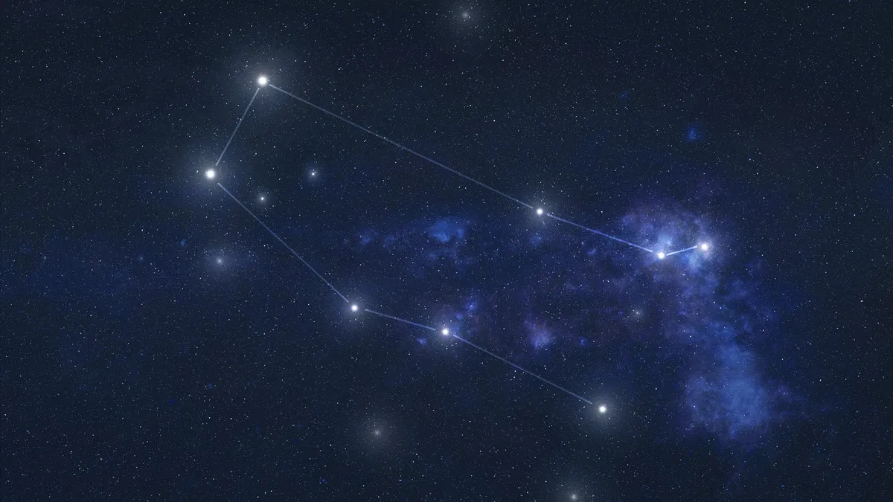

Gemini (Constellation)
► Under the tropical zodiac, the sun transits this sign between about May 21 to June 21. Gemini is represented by the twins, Castor and Pollux, known as the Dioscuri in Greek mythology. It is known as a positive, mutable sign. ◄
► The Gemini constellation is anchored by dual stars Castor and Pollux, so named for the twins of Greek mythology. The northern-sky constellation of Gemini is one of the original constellations listed by Ptolemy in the second century, as well as one of the 12 zodiac constellations. ◄
